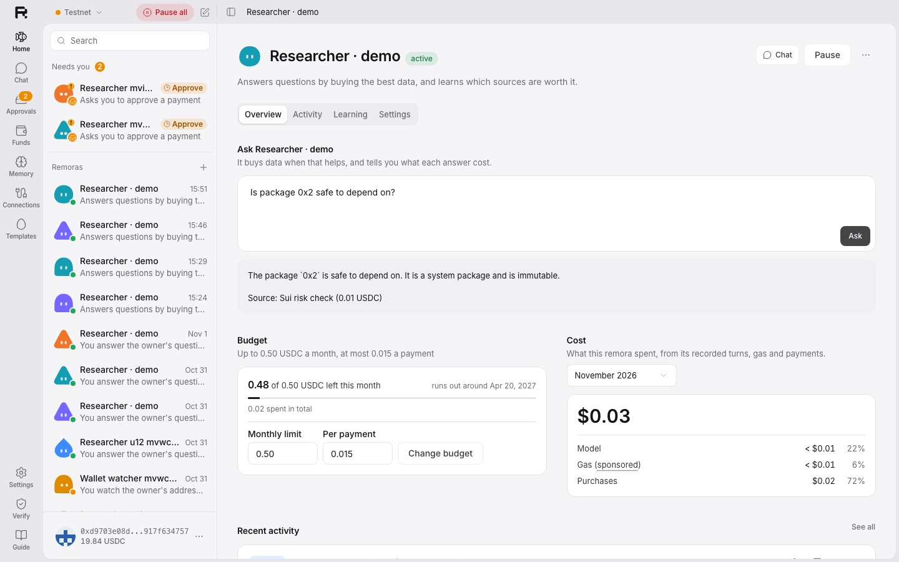
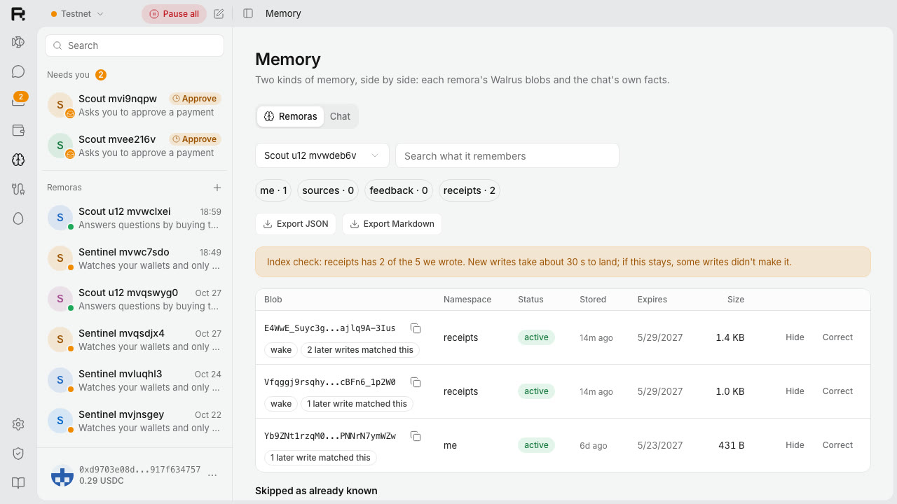
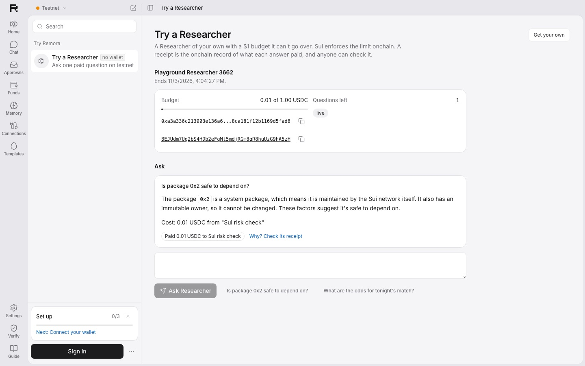
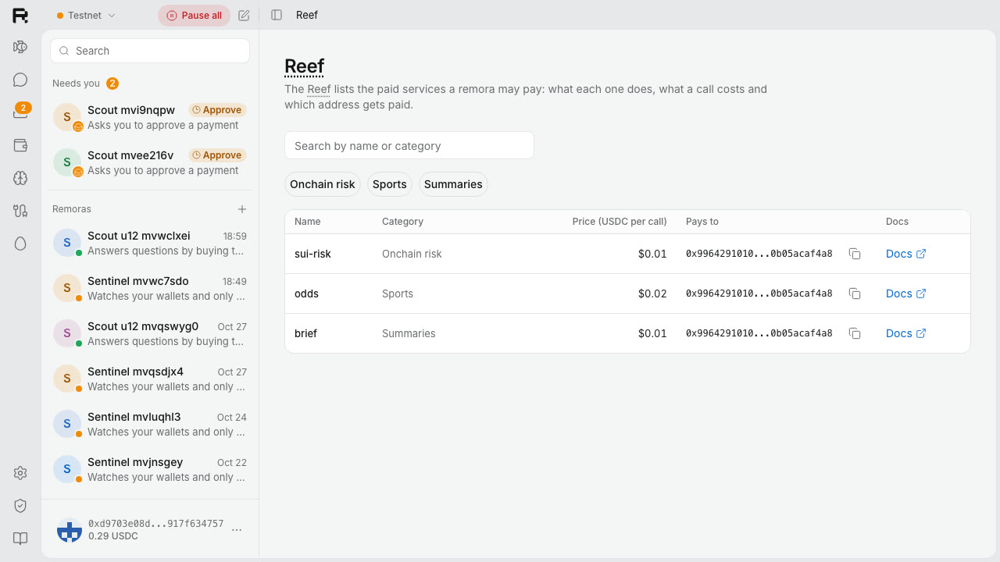
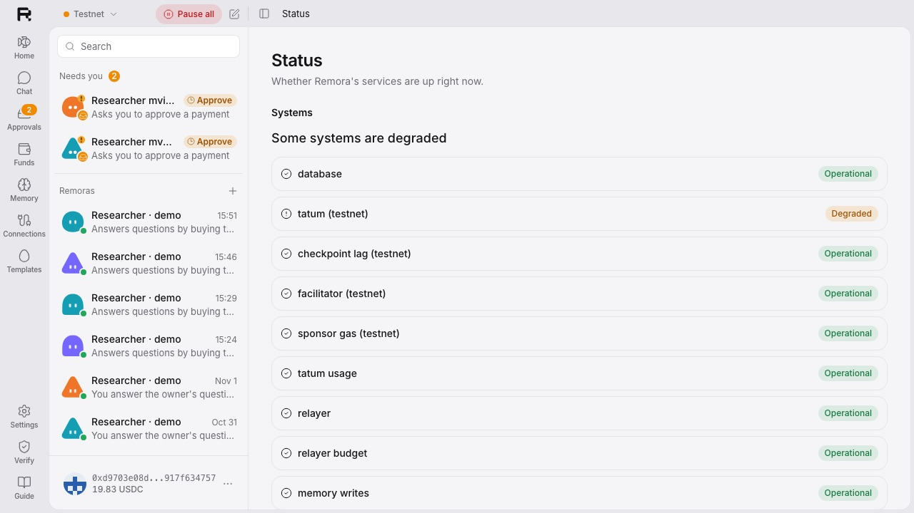

Always-on agents
you actually own.
Remora's agents run errands and pay for what they need. Each one has a budget Sui enforces, a memory you can read on Walrus, and a receipt for every decision.

Built on the rails, not around them
Agents can run errands now. Paying is where it breaks.
All or nothing
Hand an agent your wallet key, or approve every click.
One sentence away
Injected text can make an obedient model pay an attacker.
A black box
You can't read what it remembers, or see why it spent.
Four moments, one wallet.
It watches, checks, learns from a 👎, and tells you when something's off.
An unknown token lands
Your Wallet watcher pings you. Your Researcher pays 0.01 USDC for a risk report.
You mark a ping 👎
It becomes a rule on Walrus. The next one stays quiet.
An answer says “pay this”
The model obeys. The safety check blocks it, and Sui aborts it.
A key pays alone
A payment with no decision behind it alerts you in minutes.
The real app, on Sui testnet.
✓ 1 USDC limit onchain✓ a paid answer✓ a receipt that verifies✓ a rule learned✓ memory on Walrus
Numbers from recorded runs.
Every digest opens on an explorer. Every number is in the repo, with the run that made it.
Built to be read.




What's real, what isn't.
Real
- Money on Sui testnet: the spending limit, payments, the onchain abort
- Walrus Memory on mainnet
- Every server-side Sui call through Tatum gRPC
Ours, labeled
- The three paid services are our demo merchants
- The playground's $1 spending limits come from our funder
- The money rails were built the day before the window, and the README says so
Not yet
- Memory on your own Walrus account (a delegate per remora)
- Payments on Sui mainnet
- SuiNS names and the Telegram Mini App
Give an agent a budget,
not your wallet.
It goes wherever you go. It cleans up after you. It never takes the wheel.